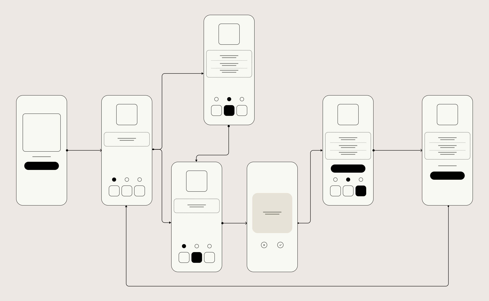
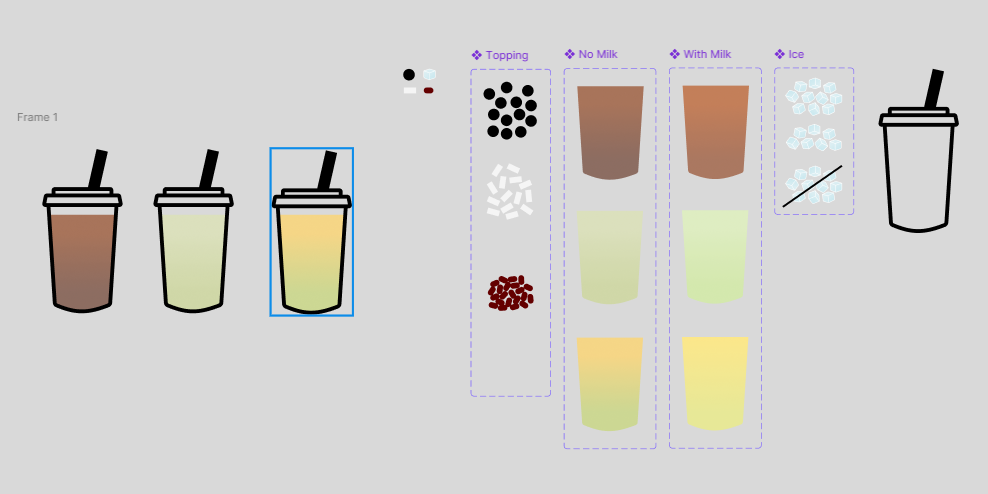
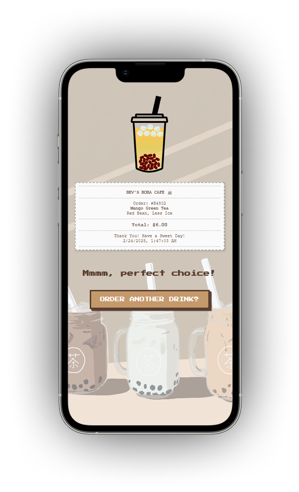
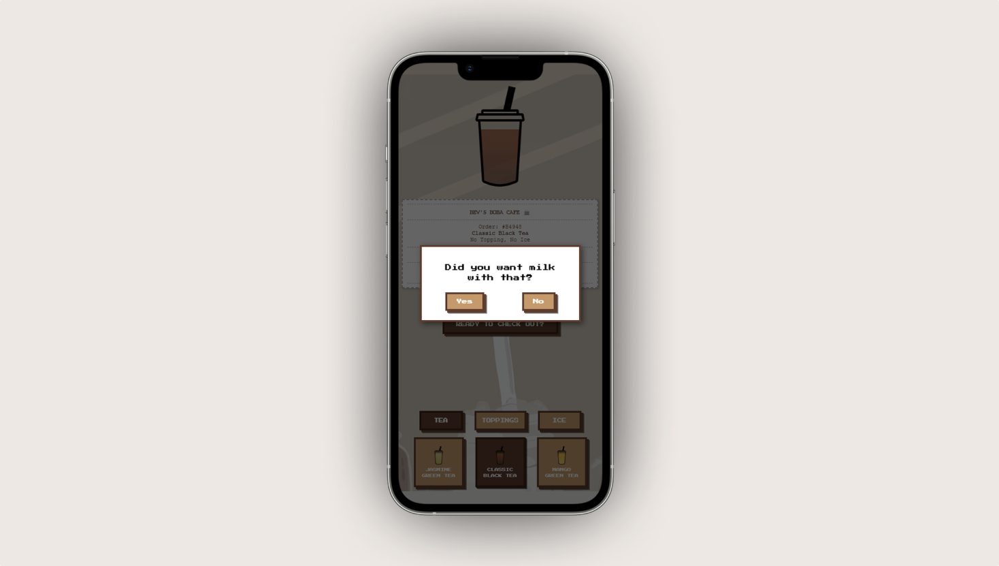

Inspired by my love for bubble tea culture and early 2000s internet
nostalgia, this project reimagines the drink customization experience as a playful, interactive web app.
I wanted to capture the fun of in-person ordering and the charm of vintage dress-up games while
showcasing my UX engineering skills in development, wireframing, prototyping, and usability testing.
Concept
Introducing a mobile-first, gamified
bubble tea ordering app
that transforms
drink customization into an engaging, repeatable experience — optimized for small screens and designed
with accessibility in mind.
The goal was to create a seamless, playful interface that
empowers users to
craft their perfect boba drink with dynamic feedback and intuitive controls. Key features include:
End-to-End Customization — Users select tea bases, toppings, and milk options, with
live previews and real-time order updates.
Dynamic Order Receipt — Generates a randomized order number, timestamp, and price,
mimicking a real café experience.
Accessible & Mobile-First UI — Built for sub-800px screens without media queries,
with WCAG-compliant contrast and clear feedback states.
Playful Motion Design — Polaroid-style drink summaries, bounce animations, and
randomized success messages for a fun, satisfying interaction loop.
End-to-End Demo
Watch the full interaction below to see how users customize and order their
personalized boba drink.
WHEN WAS THIS?
March 2025 (2 weeks)
WHAT'D I DO?
I designed and developed this interactive, mobile-first web app, focusing on creating a playful and
accessible bubble tea ordering experience.
My responsibilities include:
Interaction Design & Prototyping — Designed user flows and interactive wireframes
in Figma, focusing on a gamified experience inspired by early 2000s dress-up games.
Component-Based UI & Visual Design — Created scalable UI components and custom
assets, building a cohesive design system optimized for mobile screens and repeat play.
Mobile-First Front-End Development — Developed the responsive front-end using HTML,
CSS, and JavaScript - optimized for sub-800px screens without media queries.
Accessibility & Motion Design — Implemented WCAG-compliant color contrast, logical
navigation, and playful animations to enhance usability and delight.
Testing, Iteration & Deployment — Conducted mobile testing, refined interactions
based on feedback, and deployed the optimized app via Netlify for smooth performance.
Designing & Building the Experience
Define the Experience — Designed a gamified, repeatable interaction inspired by
early 2000s dress-up games, paired with a calm, comforting UI using a beige, milk-tea palette to
encourage endless customization and reordering.
Low-Fidelity Wireframes & User Flow —
Mapped out user flow: Select tea ➜ Add toppings ➜ Confirm milk ➜ Review
➜ Checkout, focusing on clarity and simplicity for mobile users.
Streamlined task flow with conditional actions (like popups and
checkout buttons) to ensure a smooth, intuitive experience.

UI Asset Creation —
Designed modular UI assets in Figma, including customizable tea, ice,
and toppings layers optimized for seamless stacking and consistent dimensions.
Implemented a cohesive color palette inspired by real milk tea and
structured assets for efficient updates through Frames and Components.

Client-Side Development —
Developed with HTML, CSS, and JS, optimized for mobile browsers under
800px width.
Added interactive features, including dynamic receipts with random
order numbers, live timestamps, price updates, and playful animations like Polaroid
effects and bounce transitions.

Interactive Enhancements & Accessibility —
Implemented interactive elements, including a milk selection
popup, higher contrast states for active items (WCAG compliant), and randomized success
messages for a playful closure.
Added reset functionality to ensure a fresh start with every new order,
maintaining a seamless user experience.

Playtesting & Iterations
Tested across mobile and web browsers with peer feedback
Refined contrast, navigation clarity, and order confirmation user experience
Enhanced final order scene with Polaroid layout and success messaging
Iterated to balance visual charm with usability and performance
Tools & Frameworks
Implemented using HTML, CSS, and JavaScript for frontend development
Built with Figma for UI design and prototyping
Deployed via Netlify for seamless hosting and delivery
Next Steps
Session saving and exportable drink images
More topping/milk variety
Gesture controls for drag-and-drop or swipe interactions